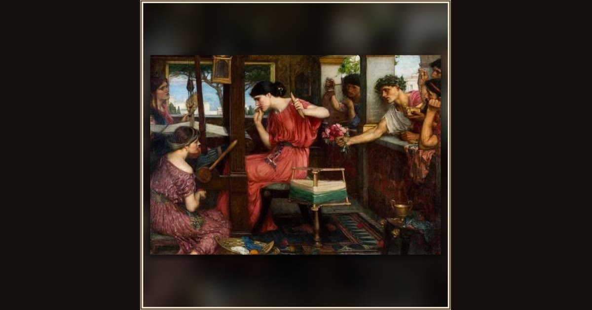

Penelope and the Suitors
John William Waterhouse · 1911–1912 · Aberdeen Art Gallery · Aberdeen, Scotland
Faithful Penelope keeps weaving at her loom, politely ignoring the pushy suitors crowding at her window while she waits for Odysseus. Explore its place in Book I of the Odyssey.